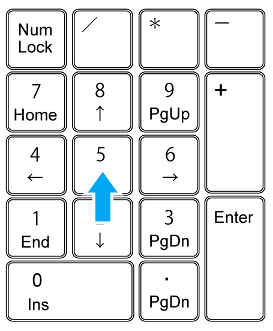

Part0 マウス+キーボードでの操縦の基本
マウス+キーボードでの操縦について解説します。
必要なもの
- テンキー
ノートPCなどでは、テンキーが付属していないことがある。
家電量販店、ホームセンターなどで購入できる。
シナリオファイル
Orbiter_ng.exeをダブルクリック。
Launchpadを起動する。
Scenariosをクリック。
シナリオファイルの一覧を開く。
ChecklistsフォルダのQuickstartを選択。

ダブルクリックでゲームを開始する。
離陸
MFDを開く
キーボードのF8を何度か押す。
2Dコクピットに切り替える。
周りにボタンが並んだ小さい画面のことを、MFDと呼ぶ。
左MFDの下の、SELボタンをクリック。
Surfaceの左にある、>ボタンをクリック。
Surface MFDに切り替わる。
エンジン点火
テンキー+（プラス）を押し続ける。
そのままキーボードのCtrlを一回押す。
これで、エンジン全開で固定される。
上昇
HUDの左上に速度が表示されている。※
160（秒速160m）になるまで加速する。
※見づらいときは、Alt+HでHUDの色を変えられる。
テンキー2を押し続けると、機首が上がる。
離陸するまで機首を上げ続ける。
機体が宙に浮いたら、キーボードのGを押す。
ランディングギア（着陸用の車輪）が収納される。
空中での操作
エンジン出力を変更する
Ctrlを押しながら、テンキー-を押す。
少しずつエンジン出力が下がる。
Ctrlを押しながら、+を押す。
少しずつエンジン出力が上がる。
テンキー*（アスタリスク）を押す。
メインエンジンが完全に停止する。
動翼の操作
テンキー2or8を押す。
機首を上下に動かす。
テンキー4or6を押す。
左右に機体を傾ける。
テンキー1or3を押す。
機首を左右に向ける。
テンキー5を押すと、機体の回転が止まる。
もう一度5を押すと解除される。

| 2or8 | ピッチ エレベータ |
機首を上下に動かす |
| 4or6 | ロール エルロン |
機体を左右に傾ける |
| 1or3 | ヨー ラダー |
機首を左右に向ける |
| 5 | KILL ROTオートパイロット | 機体の回転を止める 2度押すと解除 |
針路を変更する
機体を傾けると、少しずつその方向に針路が変わる。
Surface MFDでは、機体の傾きを確認できる。
BNKは左右への傾き（バンク角）を表す。
Lなら左に、Rなら右に傾いていることを意味する。
テンキー4or6を押す。
機体を左右どちらかに大きく傾ける。
この状態で、テンキー2で機首を上げる。
これで、大きく針路を変えることができる。
HUDの一番上には方位角が表示されている。
今回は機首を方位090 = 真東に向けてみよう。
機首が090を向いたら、機体の傾きを戻す。
一度で狙った方向に機首を向けるのは難しい。
何度か機体の回転を止めて（テンキー5）、少しずつ修正する。
高度を上げる
テンキー2を押して機首を上げる。
迎え角を60°まで上げる。
迎え角はHUDに表示される線を見ればわかる。

できるだけ針路を維持しつつ上昇する。
HUDの右上に高度が表示されている。
これが20k(20km)になるまで待つ。
20kmを超えたら、テンキー8を押す。
ゆっくりと機首を下げる。
強引な機首下げをすると、動翼が壊れることがある。
RCSを起動する
高度が30kmを超えたら、RCSを起動する。
Ctrlを押しながら、テンキー/を押す。
RCS ROTにする。
RCS MODEのボタンでも同じ操作ができる。
| バージョン | ボタンの位置 | 操作 |
|---|---|---|
| Orbiter2010 | 右端 | 右クリック |
| Orbiter2016 | 左端 | 左クリック |
これで、姿勢制御用の小型エンジン(RCS)が使えるようになる。
空気の薄い高高度・宇宙では、RCSを使って宇宙船を操縦する。
このページの一番下に、次に進むのボタンがある。